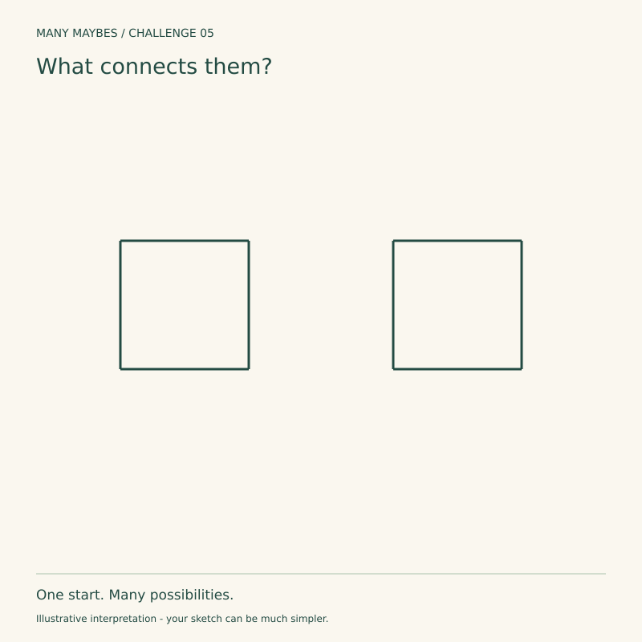
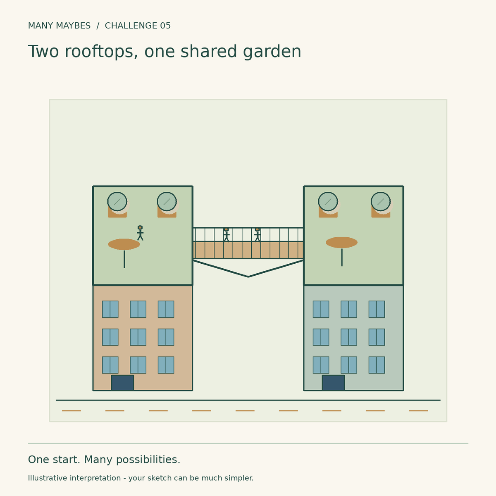
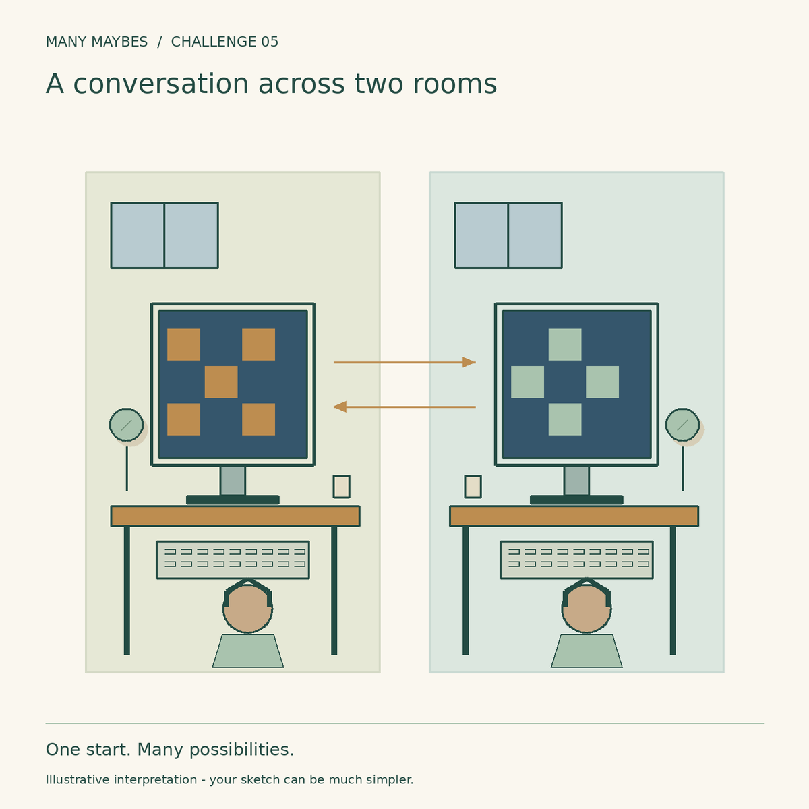
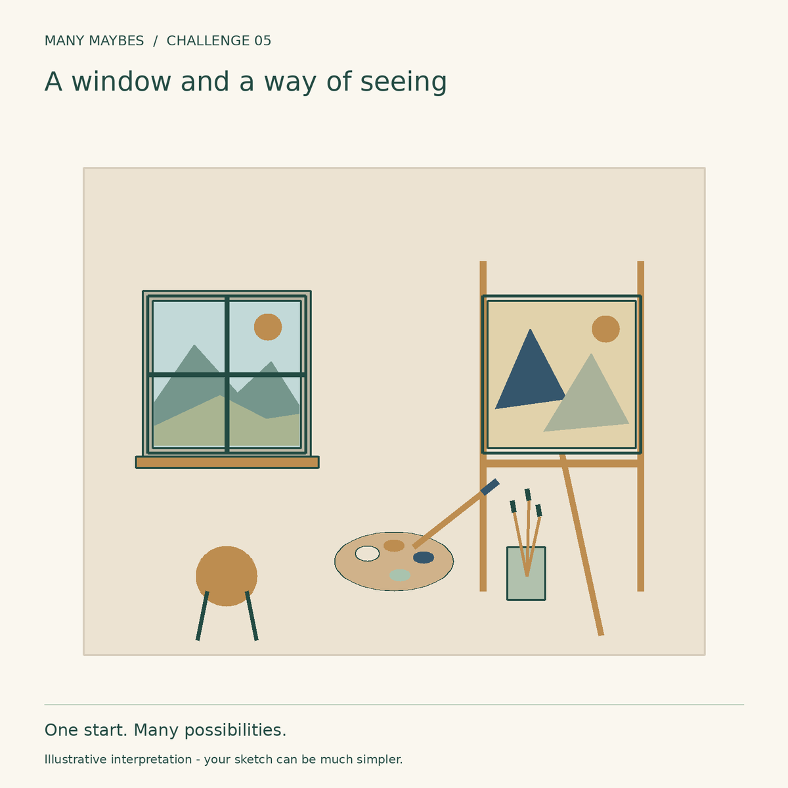

Challenge 05 · Change the relationship between elements
What connects them?
Keep both squares. Build a scene in which their relationship matters more than either square alone.

Your challenge
- Keep both original squares visible, equally sized and in their original relative positions.
- Add around or inside them. Do not cover or erase an original edge.
- Whole-starter rotation and uniform resizing are allowed; moving one square is not.
- Make a relationship visible: support, exchange, cause, comparison or representation. Add at least two clues.
Beginner route: list three ideas, then add just three clues to one. Drawing skill is optional; words, simple sketches and collage count.


Printable worksheet is being prepared for this release.
Try before you peek?
Pause here if you want to discover your own interpretation first. The examples below are always available; they are possibilities, not answers.
Optional progressive hints
- Name your first assumption.
- Change the relationship between elements. What evidence would make that reading plausible?
- Add one detail that changes the meaning of the whole image.
Two rooftops, one shared garden

Illustrative example
First assumption: The squares are separate, self-contained objects.
Thinking shift: Connect places through shared use
Convincing clues: Building floors establish rooftops. A railed bridge, people, planters and tables turn them into a shared place.
Another direction: Make the squares two riverbanks linked by a ferry.
A conversation across two rooms

Illustrative example
First assumption: Similar squares must show the same thing.
Thinking shift: Make the pair complementary
Convincing clues: Two desks, headsets, screens with complementary puzzle pieces and two-way arrows suggest collaboration across rooms. The arrows are diagrammatic exchange cues.
Another direction: Try a sender and receiver, kitchen and dining room, or two musicians answering each other.
A window and a way of seeing

Illustrative example
First assumption: Both squares are objects of the same kind.
Thinking shift: Turn one into a representation of the other
Convincing clues: One frame is a divided window onto mountains. The other is an easel-mounted painting with related colours and simplified forms; brushes and a palette establish interpretation.
Another direction: Try a real garden beside its map, or a building beside its blueprint.
Reflect
What makes these two things belong together? Change only the connection: how does the story change?
Why this challenge?
After looking at context, empty space, scale and time, shift attention to how elements affect one another.
Share when ready
Keep your sketch and a sentence about what changed. Direct website uploads for this challenge are not enabled yet. You can share your own work on Instagram and tag @trymanymaybe. Tagging does not automatically add your work to the gallery.
Explore the challenge collection